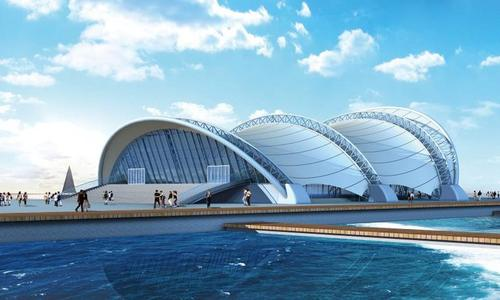

奥帆中心
时间：2019/11/11

【简介】 | ||
|---|---|---|
|
青岛奥帆中心景区位于青岛市浮山湾畔，与青岛市标志性景点——五四广场近海相望，总占地面积约45公顷，是2008年北京奥运会奥帆赛和第29届残奥会帆船比赛举办场地，奥帆中心景区依山面海，景色宜人，是全国唯一“国家滨海旅游休闲示范区”。 青岛被誉为“帆船之都”，作为最能体现青岛城市特色和展示城市形象的景区，奥帆中心景区内不仅有飞帆渺渺的优雅，有青岛十大旧景代表燕岛秋潮，有青岛新时代景观鸥翔彩虹，更有众多惊险刺激的娱乐体验，是游客来青必看的景点。 |
||
|
青岛旅游集团扎根于青岛，服务于全国各地乃至世界各地的友人通过旅游，可以使朋友们领略青岛的秀美风光，亦可以见识到青岛的风土人情，品尝到青岛的特色美食，完成一次心灵上的放逐，全身心的放松。 “弘扬青岛旅游文化、服务于来青岛观光旅游的朋友”，这既是热情的青岛人的真实写照，亦是青岛这一方秀美蕴育出的地域情怀，青岛旅游集团以“全方位、高标准、优服务”的服务理念，打造出三项经典旅游项目，将青岛的秀美风光和风土人情，呈现朋友们的面前。 |
||
【景点介绍】
鸥翔彩虹:青岛新时代景观代表，赏鸥标志性观赏点。青岛有着“中国东部候鸟驿站”之美誉，每年来岛城过冬的海鸥达十几万只，青岛市开展“挽留海鸥行动”20年，使得海鸥数量从2000只增至十几万只，“人鸥同乐”已成为青岛新时代的一种景观，清晨的彩虹桥上，碧海蓝天，海鸥翱翔，人鸥相戏，蔚为美丽!
祈福灯塔:祈福塔名称的由来，经历了多次外敌侵占的青岛人民，对于太平安定的生活格外向往，此塔初建之时，主要在夜晚照亮渔民们回家的路，因灯塔兀自伫立海中，遥望太平山，更似海中女神在祈福青岛人民的太平，故定名祈福灯塔。 06年重修此塔，塔高20.08米，取义2008奥运之意，又是大型国际帆船赛事（克利伯、国际极限、沃尔沃等）定位青岛站的坐标，但大家仍希望日夜遥望市政府和青岛金融中心的灯塔，能够继续祈福青岛城市的政治经济繁荣发展。
燕岛秋潮:“燕岛秋潮”是青岛老十景之一。燕儿岛突出海中，又有崖石，每年秋季风大浪高，撞击崖石，激起高浪喷泻如雪，金秋季节，每逢南风大作，天文大潮涨潮时节，老远便能听到震耳的涛声，走到近前只见波涛汹涌，浪花翻滚，犹如万马奔腾，场面十分壮观，令人叹为观止。
漫步情人坝:奥帆情人坝，是奥帆中心的主防波堤，后奥运时期，市政府鉴于在此漫步的纯净景色，致力于打造情人坝和酒吧一条街的打造，情人在此漫步，可以感受海天一色，蓝天白塔交辉映的浪漫，更可以感受奥帆比赛场地“千帆竞发，百舸争流”的壮观场面。“牵手走过情人坝，再大风浪也不怕！”
魅力海上剧院:浪花与风范造型勾勒出中国第一座海上剧院，被誉为“中国的悉尼歌剧院”。剧场内利用水幕景观、激光艺术、音乐喷泉、海上音乐焰火、城市夜景亮化等高科技手段为基础量身打造了青岛特色的全海景大型实景演出。海上剧院大坝是中国海军阅兵式的海上起航点，中国的大大们都是站在此码头检阅中国海军风采和实力。
奥帆博物馆:中国三大奥运博物馆之一。“奥运的长廊，帆船的世界，颁奖的舞台”，是游奥帆博物馆不可错过的三大主题，奥帆博物馆以奥帆赛及奥帆文化为主线，利用现代化展示手段，形成室内展览与室外场景互动的国家级奥运遗址类大型专题博物馆。
风铃旗阵:位于奥帆中心2号门的万国国旗树立的广场就是旗阵广场，各参赛国国旗悬挂在这里，象征着世界友好和平，“同一个世界，同一个梦想”。在这里还有一个富有立体感的五环雕塑，象征着各国运动员在奥运精神的激励下，不断进取，勇夺佳绩。 在广场上驻足，可以听到风铃阵阵，又名风铃旗阵。夏日里风动清凉，听其声能让人心宁安静、神清气爽，用听觉的方式体验青岛奥帆的独特，仔细聆听风铃的声音，如果能听到一首好听韵律，预示着会有好运（韵）。
奥运火炬大坝:雕塑竖立在奥帆中心1号入口处东100米处的奥运纪念墙码头的尽头。2008年奥帆赛，残奥帆赛的圣火曾在青岛燃烧，该火炬就是奥帆赛当时所点燃的火炬。背靠的巨幅奥运五环的雕塑是最明显最经典的体现，五环设在深入海中的码头上，与五四广场隔海而望，是奥运纪念的最佳场所。
【交通信息】
31路，33路，104路，110路，125路，208路，224路，225路，232路，304路，311路，316路，321路，363路，374路，501路，801路远洋广场站； 317路，都市观光1线，都市观光3线福州路南站； 210路，231路，402路，504路奥帆基地站。 乘地铁M2号线在燕儿岛路站下车。